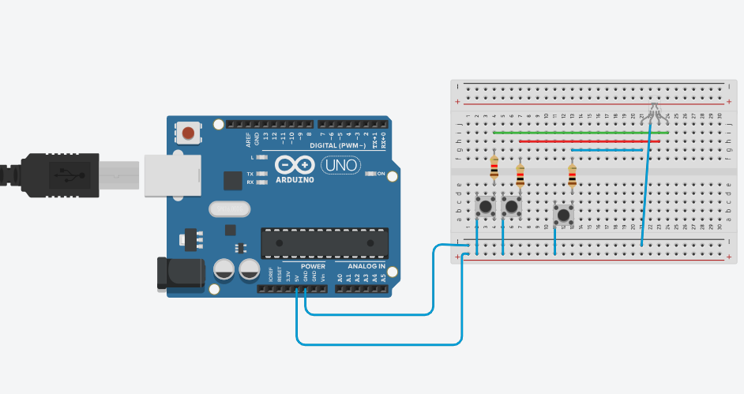
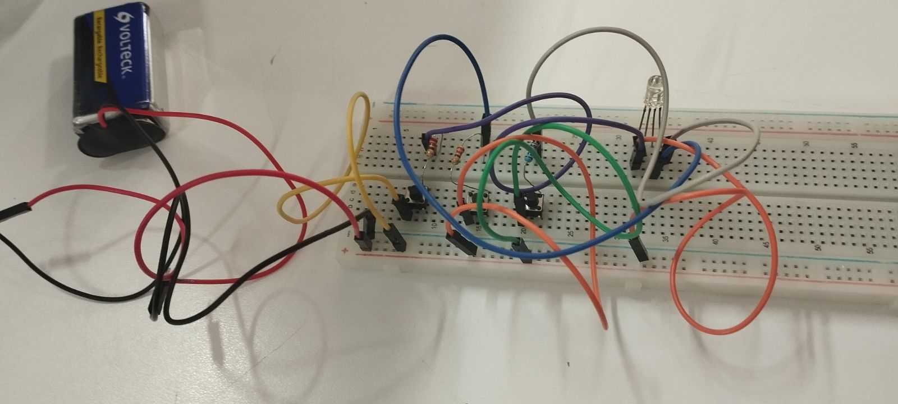

LED RGB
Control de Color
Sistema de control de color que utiliza un LED RGB (Red-Green-Blue) y las salidas PWM de Arduino para mezclar cualquier color del espectro visible, desde rojo puro hasta blanco y miles de tonos intermedios.


¿Qué es un LED RGB?
Un LED RGB es un componente que integra en un solo encapsulado tres diodos LED independientes: uno Rojo (Red), uno Verde (Green) y uno Azul (Blue). Al variar la intensidad de cada color se obtiene cualquier tono visible.
- Cátodo común: El pin más largo (GND) es compartido por los tres LEDs internos
- Ánodo común: Variante donde el pin largo va a 5V y los pines de color van a GND
- 4 pines: R, GND (o VCC), G, B — el pin GND suele ser el más largo
- Modelo de color: Síntesis aditiva — mezclar R+G+B en plena intensidad produce blanco
PWM: La Clave del Control de Color
Arduino no puede variar su voltaje de salida, pero sí puede simular niveles intermedios usando PWM (Pulse Width Modulation). En los pines marcados con ~, el microcontrolador enciende y apaga el pin miles de veces por segundo.
Proceso de funcionamiento:
- Ciclo de trabajo (duty cycle): Un valor de 0 apaga el LED, 255 lo enciende al máximo
- Frecuencia PWM: ~490 Hz en pines 9 y 10, ~980 Hz en pin 11 del Arduino UNO
- Mezcla de colores: Cada canal R, G y B acepta un valor de 0–255 independiente
- Millones de colores: 256 × 256 × 256 = 16.7 millones de combinaciones posibles
Fórmula de color en código:
analogWrite(pinR, rojo); — controla la intensidad del canal rojo (0–255)
Componentes del Circuito
- Arduino UNO: Microcontrolador con pines PWM (~9, ~10, ~11) para controlar el LED
- LED RGB (cátodo común): El componente principal con 4 pines: R, GND, G, B
- Resistencia 220Ω para R: El canal rojo consume más corriente y necesita protección
- Resistencia 220Ω para G: Limita la corriente del canal verde
- Resistencia 220Ω para B: Limita la corriente del canal azul
- Protoboard y cables: Para realizar las conexiones sin soldadura
Colores Comunes y sus Valores
Ejemplos de valores R, G, B (0–255) para colores habituales:
| Color | R | G | B |
|---|---|---|---|
| ●Rojo | 255 | 0 | 0 |
| ●Verde | 0 | 255 | 0 |
| ●Azul | 0 | 0 | 255 |
| ●Amarillo | 255 | 255 | 0 |
| ●Magenta | 255 | 0 | 255 |
| ●Cian | 0 | 255 | 255 |
| ●Blanco | 255 | 255 | 255 |
| ●Naranja | 255 | 100 | 0 |
Código de Ejemplo
Este ejemplo hace un ciclo de colores usando analogWrite() en los pines PWM:
// Pines PWM para cada canal de color
const int pinR = 9; // Canal Rojo (~9)
const int pinG = 10; // Canal Verde (~10)
const int pinB = 11; // Canal Azul (~11)
// Función para establecer un color
void setColor(int r, int g, int b) {
analogWrite(pinR, r);
analogWrite(pinG, g);
analogWrite(pinB, b);
}
void setup() {
pinMode(pinR, OUTPUT);
pinMode(pinG, OUTPUT);
pinMode(pinB, OUTPUT);
}
void loop() {
// Rojo
setColor(255, 0, 0);
delay(1000);
// Verde
setColor(0, 255, 0);
delay(1000);
// Azul
setColor(0, 0, 255);
delay(1000);
// Blanco (R+G+B al máximo)
setColor(255, 255, 255);
delay(1000);
// Fade: ciclo de color continuo
for (int i = 0; i < 256; i++) {
setColor(i, 255 - i, i / 2);
delay(8);
}
}Aplicaciones Prácticas
- Indicadores de Estado: Rojo = error, verde = OK, azul = en proceso — como un semáforo de sistema
- Iluminación Ambiental: Tiras LED RGB para decoración dinámica o mood lighting
- Retroalimentación Visual: Cambiar color según temperatura, nivel de batería o señal
- Juegos y Proyectos Interactivos: Botones con retroiluminación que cambia según el contexto
- Semáforos Inteligentes: Combinado con sensores para control de tráfico
- Arte Generativo: Instalaciones que cambian de color con música, movimiento o datos en tiempo real
Consejos y Calibración
Para obtener los mejores resultados con tu LED RGB:
- Identificar tipo: Mide continuidad entre el pin largo y los demás. Si conduce, es ánodo común; si no, es cátodo común
- Ánodo común: Los valores se invierten — usa 255 - valor en cada canal para el comportamiento esperado
- Resistencias individuales: Nunca compartas una sola resistencia entre los tres canales; cada uno necesita la suya
- Corrección gamma: El ojo humano percibe el brillo de forma no lineal. Usa tablas gamma para transiciones más suaves
- Pines PWM: Solo los pines marcados con ~ soportan analogWrite(). En Arduino UNO son: 3, 5, 6, 9, 10 y 11
- Corriente máxima: Cada canal soporta ~20mA. Con tres encendidos al máximo simultáneamente, el consumo total es ~60mA